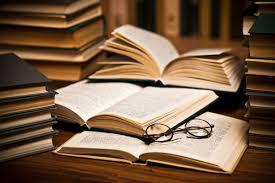

Historias De Los Libros

Somos muchos los individuos que disfrutamos devorando un buen libro de vez en cuando,
ya sea cuando nos vamos de viaje y tenemos una larga espera en el aeropuerto o cuando
queremos aprender cosas nuevas sobre nuestra profesión con uno de los manuales tan interesantemente
útiles que hay en el mercado.
Pero no todos los libros son iguales. Algunas obras editoriales son de consulta, otras explican historias
fantasiosas y otros son ilustrados. Además, cada libro puede venir presentado en un formato diferenciado,
o dirigirse a un público determinado.En el artículo de hoy repasaremos las clases de libros que existen, según distintos criterios.
Breve Historia Del Libro
Los libros aguardan cientos de miles de historias esperando para ser leídas. Historias de amor, historias de la guerra,
istorias de engaños, de fantasías, de suspense, de terror y de cualquier temática que sea susceptible de ser impresa sobre
las hojas de estos maravillosos productos. Miles de historias, cuentos, novelas e investigaciones pueden encontrarse almacenadas
en las estanterías de las librerías.

Historia Del Libro
Para hablar de la historia del libro hay que tener en cuenta cuáles son las características con las cuales definir qué es un libro,
ya que a día de hoy no existe un acuerdo común en cuanto a las limitaciones y metodologías, así como en los objetivos y las disciplinas
que intervienen en el estudio de la historia de estos. Tal como definió la UNESCO para fines estadísticos, un libro debe cumplir
con las siguientes características: Debe ser una publicación impresa no periódica, debe tener, como mínimo, 49 páginas y debe estar
editada en el país y puesta a disposición del público.
El origen y evolución del libro en la antigüedad continúa en Egipto, donde se cree que se comenzó a utilizar la tinta por primera vez,
así como el soporte de papiro —el cual comparte unas características muy similares con el papel y era obtenido de una planta acuática que
crecía a orillas del Nilo—. El libro egipcio puede considerarse como la segunda forma de libro en la historia.
Continuando con la explicación sobre el origen y la evolución del libro, el siguiente lugar donde debemos fijarnos es en Grecia.
En esta región se empezó a utilizar el papiro hacia el siglo VII a.C. Este convivió con otros materiales como las tablillas
de madera rehundida, que eran rellenadas de cera o de pergamino —aunque también las pieles utilizadas como soporte de escritura—.
Las constantes relaciones comerciales entre Egipto y Roma dieron paso, por otro lado, a que el pergamino también se extendiera
en esta zona del mapa. Ahora bien, el pergamino fue cayendo poco a poco en desuso, hasta que desapareció por completo en el país.
A finales del siglo V d.C. este fue sustituido por el códice de pergamino en el cual se podía escribir por las dos caras.
Cual Es El Primer Libro De la Historia
Antes de inventarse la impresión con tipos móviles se realizaron otro tipo de libros mediante la técnica xilográfica de origen chino.
Esta consistía en la impresión mediante una plancha de madera, la cual era previamente tallada y entintada, para llevar a cabo los estampados.
Tal como ubican algunos historiadores, el libro más antiguo de la historia podría ser El Sutra del diamante
Este ejemplar fue estampado en China a partir del 11 de mayo de 868 mediante la técnica xilográfica y contó con la autorización de Wang Jie.
Se trata del texto impreso más antiguo de la historia conservado a fecha de hoy.

Cual Fue El Primer Libro Impreso
Cuando se habla de impresión hay que hablar del alemán Johannes Gutenberg y de la invención de la imprenta en el año 1440.
El “Padre de la Imprenta” desarrolló una moderna técnica de impresión con tipos móviles. En vez de utilizar las tablillas de madera,
que se desgastaban con el uso, confeccionó moldes con hierro. En total 150 tipos imitando a la perfección la escritura de un manuscrito.
Ahora bien, ¿Cuál fue el primer libro impreso? Gutenberg completó lo que se conoce como la primera impresión de tipos móviles,
esta fue la Biblia de Gutenberg de 42 líneas. La biblia de Gutenberg fue el primer libro impreso de la historia, esta se imprimió
con un total de 42 líneas por cada página.
La Historia Del Dia Del Libro
El libro tiene su propio día del libro, el 23 de abril. Esta fecha fue establecida en por la UNESCO en 1995 en conmemoración
de la muerte de Miguel de Cervantes, William Shakespeare y Garcilaso de la Vega, pilares de la literatura universal.
Los tres fallecieron en el año 1616. Actualmente este día tiene como objetivo fomentar la lectura, así como la industria
editorial y la protección de la propiedad intelectual a través del derecho de autor.